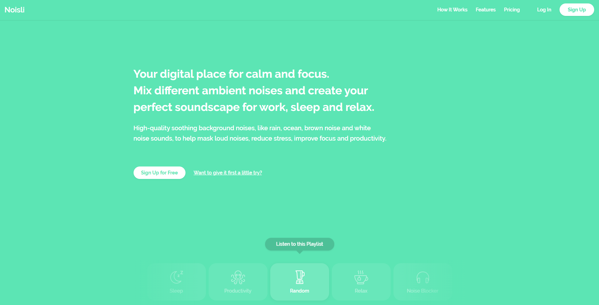
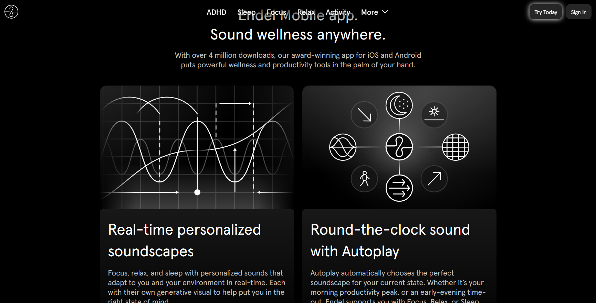
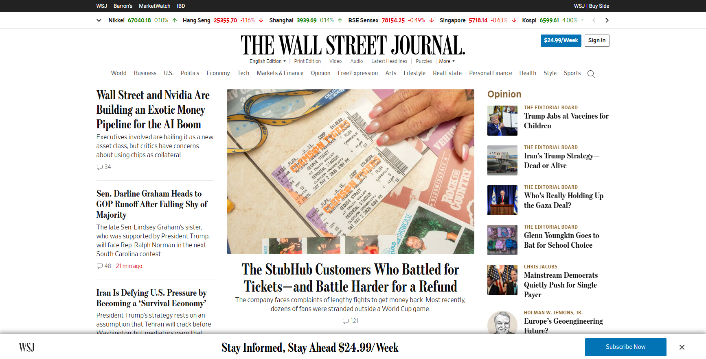
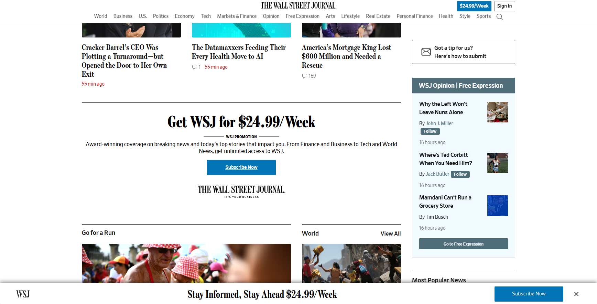
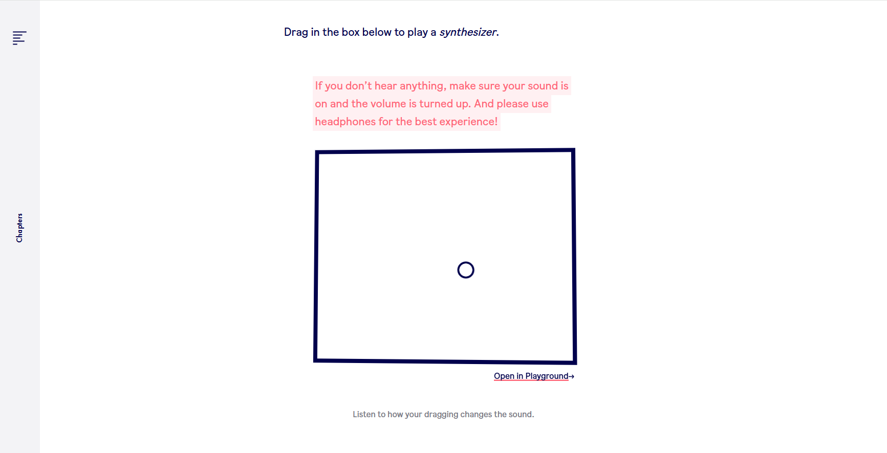
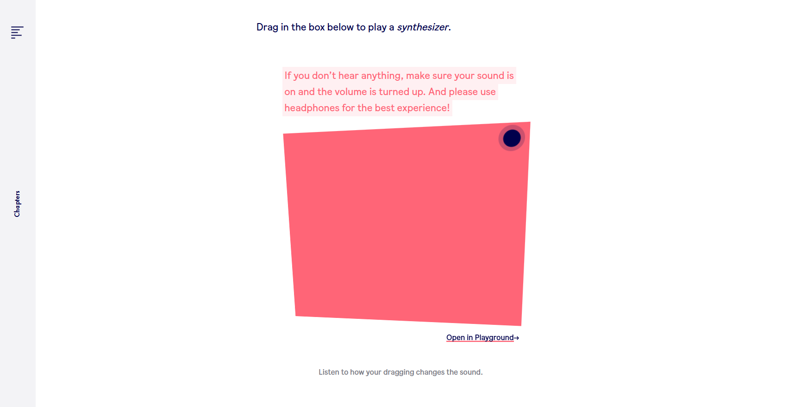

System Design Document: Dilation
Design scenario analysis and response
I thought about a lot of different ways you can relate to time without it being a clock or a timer. If I just made a timer or a countdown it would be too basic. The website would be plain, an ordinary timer rather than an instrument.
That's why I picked the Sonic Timer. It leaves the most room to do something other than count down. Dynamic Soundtracker was a close second, but after going back and forth I decided to pick one and commit.
Normal timers count down. They start with a number and it gets smaller and smaller until it reaches zero. For everyday things that's fine, and honestly it's perfect. But people who don't need precision and just want something calm, for example meditating, resting, or lying down for a few minutes, will most likely check how much time is left before it ends, and that can ruin their mood. Say someone has a twenty-minute break and wants to lie down and rest. They'll constantly be waking up, raising their head, and checking how much time is left.
Audio doesn't have that problem. A sound that changes smoothly can tell you where you are in that period of time without needing your eyes. You can get that information with your eyes closed, or while carrying on with whatever you were doing, without having to turn and face the screen. It doesn't cost you any attention.
The brief also says instrument. If my project was just a timer it wouldn't be an instrument, it would be a product. An instrument needs the user's input and choices. So I designed this system to take that input and let the user decide what their time sounds like, not just how long it lasts.
Purpose
Let the user set aside a period of time without having to look at it, and let them decide what that time sounds like before it starts.
Worth
- Let users keep their attention instead of spending it on the screen
- Let time be felt as something closer to art, elegant rather than a number going down
- Let the ending come slowly instead of abruptly
- Make each session belong to the person who built it, rather than a preset everyone else gets
Project Overview
Synopsis
Dilation is a browser instrument for building a stretch of time and letting it run without distracting you. You make a soundscape, set how long it runs, then stop looking at the screen. The sound carries you and tells you roughly where you are without showing you a single number.
I picked the name Dilation because I love physics. In Einstein's theory of relativity there's a thing called time dilation, and to sum it up, it means time doesn't move the same for everyone. How fast or slow time moves depends on how fast you're moving and how much gravity you're sitting in (Encyclopaedia Britannica 2026). So two people can measure the same stretch and get different amounts of time. Measured time isn't fixed. It's relative, and it depends on where you're measuring from.
That concept gave me a lot of the thinking behind this project. Two people can both set a one minute session and end up experiencing something completely different.
There are two screens. The first is the instrument, where you give your input. You pick how long the session runs, the voice, and the tuning. Basically, how it will sound.
The second is the session screen. It shows a slow animation that carries no information about progress. It doesn't count down or up, it doesn't fill, and it isn't a progress bar. It's there to be nice to look at and useless to read, so attention has nowhere to go except the sound.
The sound moves through three phases. It starts sparse and low while you settle. The middle feels fuller and warmer. Then it thins out toward the end, so you feel it closing before it closes. There's no alarm. The sound just fades to nothing.
How it answers the purpose and worth
The information a normal clock shows you visually is moved into sound, through phase and pitch. The visual side is emptied out, so no information comes from it at all. The input screen also offers a lot of choices instead of presets, so you build your own session rather than picking one, and it ends up unique to you. That's the purpose.
For worth, the user keeps all of their attention, because the interface is built to get less interesting over time instead of more. Time gets shaped into sound. And the ending arrives slowly instead of abruptly interrupting them.
Project Framing
Concepts. In: time as sound instead of numbers, and composing before you get the final product. Out: productivity framing, so no scores, no stats, no history, no gamification, and no tracking.
Characterisation. Calm, smooth and plain. An instrument, not a wellness app. The visuals are there but they're deliberately uninformative, so they don't compete with the sound.
Technologies. In: Tone.js for the sound, the Temporal JavaScript object as the extended technique running the session clock, and HTML and CSS. All sound is generated rather than sampled, so nothing cuts off or loops.
Out: note by note keyboard playing, since that would pull the user into constant input during the session. Touch and mobile, since this is only built for desktop. Also out: MIDI, recording and export, accounts, and notifications.
Interaction Design Analysis
Noisli: characterisation

Noisli mixes ambient sounds like rain, ocean and white noise, and it also has a session timer. It's the closest existing tool to what I'm making.
The landing page is entirely saturated green and the copy talks about focus and productivity. For a tool meant to calm you down, the presentation is loud and pitched at work rather than rest. There's a signup button in the top corner and another in the middle of the page, and while you can try it without an account, registering is clearly what the page wants from you first.
This affected two decisions in my project. Dilation stays away from productivity framing entirely, because I don't want the tool to feel like it's helping you get more done. And there are no accounts, so nothing is asked of the user before they start. The visual character follows from that: plain and quiet rather than bright, so the interface matches what it's asking you to do.
Endel: information design

Endel makes generative soundscapes for focus, sleep and relaxation.
The problem is the top navigation. It has no background behind it, so the nav text sits directly on whatever is underneath. When you scroll, it overlaps the page text and the two mix together, which makes it harder to read. The nav is also the same font and roughly the same size as the rest of the text on the page, so nothing separates it from the content it's sitting on top of.
This mattered for my project because my session screen has the same setup. There's a control sitting on top of a moving animation. If I don't give that control its own surface, it will end up as hard to read as Endel's nav. So the end button needs a background of its own, and the animation needs to stay dark and low contrast underneath it.
The Wall Street Journal: purpose

The Wall Street Journal's purpose is to get you to subscribe. As soon as you land on the site there's a banner at the bottom asking you to subscribe, and a smaller button in the top right that says $24.99 a week. That's two prompts before you've read anything.

Both stay on screen while you scroll, and as you go further down there's another full subscribe banner sitting in the middle of the page, between the articles.
The Wall Street Journal is built to grab your attention and point you toward the subscribe button. My website is built to do the opposite. It releases attention instead of holding onto it, so the user keeps all of theirs.
Ableton Learning Synths: feedback


Learning Synths is a browser synthesiser made by Ableton for teaching how synthesis works. The main part is a box you drag inside to play it.
When you drag, the box fills with red, the shape tilts toward your mouse, and the sound changes as you move. Three things respond to one input, so there's no doubt the instrument heard you. It did give me a jump scare though. There's a warning above the box telling you to use headphones, but nothing tells you how loud it will be and there's no way to set the volume first.
So my setup screen needs to respond the same way, where changing the voice or tuning is heard straight away. And the first sound of a session has to fade in rather than arrive at full volume.
References
Encyclopaedia Britannica 2026, Time dilation, Encyclopaedia Britannica, viewed 12 August 2026, <https://www.britannica.com/science/time-dilation>.
Noisli n.d., Noisli, viewed 12 August 2026, <https://www.noisli.com/>.
Endel n.d., Endel, viewed 12 August 2026, <https://endel.io/>.
The Wall Street Journal 2026, The Wall Street Journal, Dow Jones & Company, viewed 12 August 2026, <https://www.wsj.com/>.
Ableton n.d., Learning Synths, viewed 12 August 2026, <https://learningsynths.ableton.com/>.